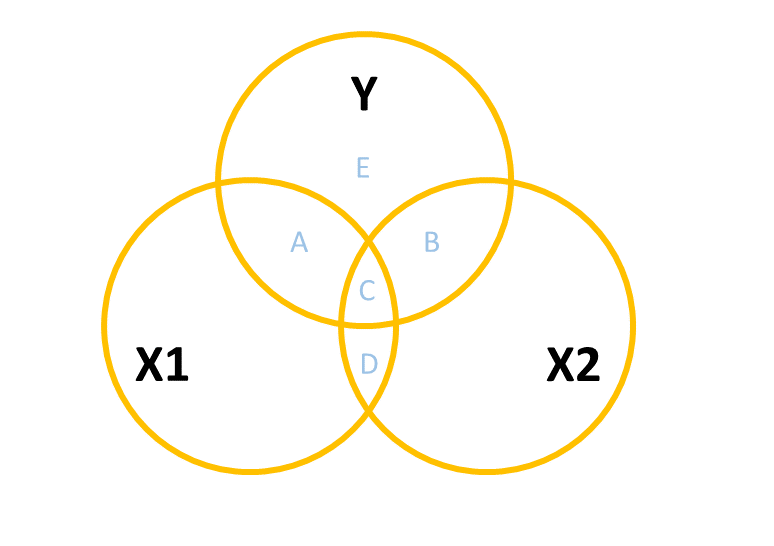
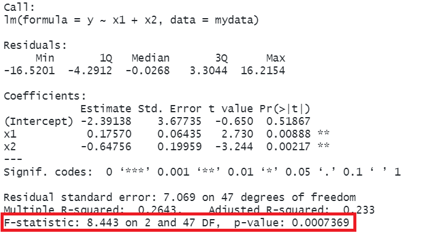

| outcome (y) | predictor (x) | regression | equivalent to |
|---|---|---|---|
| continuous | continuous | lm(y ~ x) | cor.test(x, y) and cor.test(y, x) |
| continuous | binary | lm(y ~ x) | t.test(y ~ x) |
8A: Multiple Linear Regression
The simple linear regression model with a single predictor lm(y ~ x1) is a useful introduction to the idea of model-based thinking, but it’s not clear how much benefit this gives us as it is actually equivalent to the basic statistical tests we have already seen.
Simple Statistical Tests as Regression Models
The real power of regression models comes into effect when we start to concern ourselves with more than just “one outcome explained by one predictor”.
This week, enter… \(x_2\)!
We will initially look at the case of “one outcome, two predictors”, but the beauty of this is that the logic scales up to however many predictor variables we want to include in our model.
lm(y ~ x1 + x2 + ... + xp)The Multiple Regression Model
When we fitted the simple regression model with one predictor:
\[ y = b_0 + b_1(x) + \epsilon \]
we were fitting a line to a scatterplot of points that we plotted in 2 dimensions (an x-axis and a y-axis).
When we fit a multiple regression model with two predictors:
\[ y = b_0 + b_1(x_1) + b_2(x_2) + \epsilon \]
we are fitting a surface (or “plane”) to a 3-dimensional cloud of datapoints (Figure 1). There are three dimensions: x1, x2, and y.
Don’t worry about trying to figure out how to visualise it if we had more predictors! We can only conceive of 3 spatial dimensions.1 However, the logic stays the same when we increase this to having \(p\) predictors, but we have a model that is a \(p\)-dimensional surface, and each coefficient is the angle of that surface with respect to each predictor.
When we have two predictors, our model is now determined by three numbers:
- the intercept, denoted \(b_0\).
This is the point at which the plane hits the y-axis (i.e. where \(x_1=0\) and \(x_2=0\)) - the slope of x1, in this case denoted \(b_1\).
This is the angle of the regression plane with respect to the axis of \(x_1\). It is the amount which the plane increases for every 1 increase in \(x_1\).
- the slope of x2, in this case denoted \(b_2\).
This is the angle of the regression plane with respect to the axis of \(x_2\). It is the amount which the plane increases for every 1 increase in \(x_2\).
Fitting Multiple Regression Models in R
As we did for simple linear regression, we can fit our multiple regression model using the lm() function. We can add as many explanatory variables as we like, separating them with a +.
model_name <- lm(y ~ 1 + x1 + x2 + ... + xk, data = dataframe)And we can use all the same functions that we have already seen such as summary(), predict(), fitted(), coef() etc.
mydata <- read_csv("https://uoepsy.github.io/data/usmr_mlr.csv")
eg_model <- lm(y ~ x1 + x2, data = mydata)
summary(eg_model)
Call:
lm(formula = y ~ x1 + x2, data = mydata)
Residuals:
Min 1Q Median 3Q Max
-16.5201 -4.2912 -0.0268 3.3044 16.2154
Coefficients:
Estimate Std. Error t value Pr(>|t|)
(Intercept) -2.39138 3.67735 -0.650 0.51867
x1 0.17570 0.06435 2.730 0.00888 **
x2 -0.64756 0.19959 -3.244 0.00217 **
---
Signif. codes: 0 '***' 0.001 '**' 0.01 '*' 0.05 '.' 0.1 ' ' 1
Residual standard error: 7.069 on 47 degrees of freedom
Multiple R-squared: 0.2643, Adjusted R-squared: 0.233
F-statistic: 8.443 on 2 and 47 DF, p-value: 0.0007369So why is this a useful thing to do? There are two primary aims that might lead you to fit models with more predictors:
- Estimation: Our coefficients now estimate the association between each predictor and the outcome variable, after accounting for variance explained by other predictors.
- Prediction: We can build a model that better predicts the outcome.
Typically, psychological research is more interested in estimation of specific associations. Other areas (think industry/data science/machine learning et al.) may be more interested in building a model for a functional purpose - e.g. to predict what product on a website a user is going to click on. We’ll take a look later on about some of the overall model metrics (like \(R^2\) etc.), but we’re going to first focus on the coefficients from multiple regression models.
Multiple Regression Coefficients
The benefit of multiple regression models is that they allow us to exercise statistical control.
We often conduct research where we are interested mainly in one relationship, but we know that there are other things also at play - there are other variables that will probably strongly influence results if they aren’t held constant. Statistical control allows us to examine the relationship of interest while holding constant these other variables.
When we have multiple predictor variables in our model, the coefficients we get out represent the association between the outcome \(y\) and the bit of each predictor variable that is unique from the other predictors.
Terminology
As with all areas of statistics, people seem to use lots of different terms here. It can be confusing!
- outcome/response/dependent variable: variable on the left hand side of the model equation
- predictor: any variable on the right hand side of the model equation
- focal predictor/independent variable: the predictor of interest
- covariates/confounders/control variables: other variables that we are less interested in but believe to relevant to how the data comes about, and that may influence both the outcome and the focal predictor.
A common way to build this intuition is to consider a Venn diagram with a circle showing the variance in each variable. Figure 2 shows a simple linear regression with one predictor (i.e. lm(y ~ x1)). The circle for \(y\) shows the total variance in \(y\) (the same for the \(x_1\) circle). The overlap between circles (labelled “A”) shows the variance in \(y\) that is explained by \(x_1\) (i.e. the covariance).
When we add in a new predictor, \(x_2\), where do we add it? If \(x_1\) and \(x_2\) are completely uncorrelated with one another, then it would look something like Figure 3, where there is no overlap between the \(x_1\) and \(x_2\) circles. The total variance explained in \(y\) by both predictors is \(A + B\), and in this case, nothing changes in our estimate of the relationship between \(y\) and \(x_1\). It’s just the same as before (the area labelled “A” is the same in both Figure 2 and Figure 3).

However, in practice the predictors in our regression model are likely to overlap a bit (it’s hard to find additional predictor variables that are not correlated with other predictors). In this case, our Venn diagram is going to look like Figure 4. The correlation between \(x_1\) and \(x_2\) is shown by the overlap of those two circles (the area \(C + D\) in the diagram). The total variance explained in \(y\) is now separated into the areas \(A + B + C\) (and \(E\) is the unexplained variance - the residuals).
Areas \(A\) and \(B\) are no longer the same as in the previous diagrams - there’s a little bit (area \(C\)) that we don’t want to double count in its explanatory power as it can’t be attributable to specifically one variable or the other.

- \(A\) is the variance in \(y\) uniquely explained by \(x_1\)
- \(B\) is the variance in \(y\) uniquely explained by \(x_2\)
- \(C\) is the variance in \(y\) that is explained by both \(x_1\) and \(x_2\) but not attributable to either one uniquely.
The coefficients (one for each predictor) from our multiple regression model lm(y ~ x1 + x2) reflect the areas \(A\) and \(B\), scaled to be the “change in \(y\) associated with a one unit change in [predictor], holding [other predictors] constant”.
Interpreting multiple regression coefficients
The parameters of a multiple regression model are:
- \(b_0\) (The intercept);
- \(b_1\) (The slope across values of \(x_1\));
- …
- …
- \(b_k\) (The slope across values of \(x_k\));
- \(\sigma\) (The standard deviation of the errors).
You’ll hear a lot of different ways that people explain multiple regression coefficients. For the model \(y = b_0 + b_1(x_1) + b_2 (x_2) + \epsilon\), we might hear \(b_1\) (the coefficient for \(x_1\)), described as:
the increase in \(y\) for a one unit increase in \(x_1\) when…
- holding \(x_2\) constant.
- controlling for differences in \(x_2\).
- partialling out the effects of \(x_2\).
- holding \(x_2\) equal.
- accounting for effects of \(x_2\).
What exactly do all these mean? If we return to our regression surface, our coefficients are the angles of this surface. We can see that as \(x_1\) increases, the surface goes up. This increase is the same no matter where on \(x_2\) we are (i.e. the angle doesn’t change as we move up \(x_2\)).
mydata <- read_csv("https://uoepsy.github.io/data/usmr_mlr.csv")
eg_model <- lm(y ~ x1 + x2, data = mydata)
summary(eg_model)Coefficients:
Estimate Std. Error t value Pr(>|t|)
(Intercept) -2.39138 3.67735 -0.650 0.51867
x1 0.17570 0.06435 2.730 0.00888 **
x2 -0.64756 0.19959 -3.244 0.00217 **Imagine a person who scores 3 on \(x_1\). what is the estimated change in \(y\) if they scored 4 instead? The coefficient for \(x_1\) tells us how much their score on \(y\) would increase by 0.176 provided they don’t also change on \(x_2\). So we are moving along the regression surface in the \(x_1\) direction. This makes sense, because if they also changed on \(x_2\), then we would expect their score on \(y\) to change because of this too (i.e. we would be moving diagonally on the surface).
Visualising Associations
The associations we get out from our coefficients are conditional upon holding constant other predictors. How are we supposed to visualise this?
Three-dimensional plots like the ones above are lovely, but a) they’re difficult to make and b) they only work when there is one other predictor variable being controlled for.
The typical way to plot these associations is to make a 2-dimensional figure that shows the model estimated increase in \(y\) across values of \(x\). Notice the use of “model estimated” - we are visualising the model, not the data.
Luckily, the sjPlot package can make it very easy for us to create plots of model estimated effects. We need to give it the model, the type of thing we want plotted (in this case “eff” for “effect”), and the relevant predictor term (in this case “x1”):
mydata <- read_csv("https://uoepsy.github.io/data/usmr_mlr.csv")
eg_model <- lm(y ~ x1 + x2, data = mydata)
library(sjPlot)
plot_model(fit, type = "eff", terms = "x1")
It might help to think of this as if we are just tilting the our view of the regression surface so that we see it from only one edge:

Example: Caffeine Heart Rates
We have a sample of 100 people, and we measure their resting heart rate and their caffeine consumption. We’re interested in estimating how caffeine consumption is associated with differences in resting heart rate. However, we also know that heart rate increases with age and we think that older people tend to drink less caffeine. So we want to isolate the differences in heart rate due to caffeine from those due to age.
The toy dataset for our heart rate and caffeine example is at https://uoepsy.github.io/data/usmr_hrcaff.csv.
We can see plots of the different relationships in Figure 5. It looks from these like heart rate decreases with caffeine, and increases with age. But note also that caffeine decreases with age.
Code
hrcaff <- read_csv("https://uoepsy.github.io/data/usmr_hrcaff.csv")
library(patchwork)
ggplot(hrcaff, aes(x=caffeine,y=rhr))+
geom_point() +
ggplot(hrcaff, aes(x=age,y=rhr))+
geom_point() +
ggplot(hrcaff, aes(x=age,y=caffeine))+
geom_point()If we fit a simple regression \(heartrate \sim b_0 + b_1(caffeine)\), we get a nice line, with a significant negative slope, suggesting to us that drinking more caffeine is associated with lower heart rate! Good news for me, I’m on my 6th coffee today!
Code
ggplot(hrcaff, aes(x=caffeine,y=rhr))+
geom_point() +
geom_smooth(method=lm)
lm(rhr ~ caffeine, data = hrcaff)
...
Coefficients:
Estimate Std. Error t value Pr(>|t|)
(Intercept) 101.1746 5.3424 18.938 < 2e-16 ***
caffeine -0.2600 0.0527 -4.933 3.31e-06 ***But… what if the reason that people in our sample who drink more caffeine have lower heart rates not because they drink more caffeine, but because they are older (and older people have lower heart rates).
The coefficient for the association between caffeine and heart rate when we also include age in as a predictor (lm(rhr ~ age + caffeine)), is no longer significant.
lm(rhr ~ age + caffeine, data = hrcaff)
...
Coefficients:
Estimate Std. Error t value Pr(>|t|)
(Intercept) 41.8310 16.0000 2.614 0.010363 *
age 0.3914 0.1003 3.904 0.000175 ***
caffeine 0.0933 0.1030 0.906 0.367398 Why? Because after we take into account how old people are, knowing their caffeine consumption doesn’t actually provide any information about their heart rate.
If it helps, we might think of this model as the diagram in Figure 6. When we don’t have age in our model, then the estimated effect of caffeine on heart rate is the areas \(B + C\). When we do have age in the model, the variance in heart rate explained uniquely by caffeine is just the tiny area \(B\) (not a useful amount).
This example is a very extreme one where the relationship completely disappears. in real data associations tend to be more subtle/less clear cut. Including \(x_2\) may increase or decrease the association between \(y\) and \(x_1\), depending on the extent to which \(x_1\) and \(x_2\) are correlated.
Multiple Categories = Multiple Regression
We saw last week how to interpret simple regression models when there is a binary predictor (see 7A#binary-predictors). The addition of binary predictors in multiple regression models is pretty much the same - the coefficient will give us the estimated change in \(y\) when moving from one level to the other2, holding other predictors constant.
If you want a visual intuition to this, it is like a shift between two lines, or between two surfaces (depending on how many other predictors there are). It’s actually just another dimension to the model, but a dimension that is on a discrete scale - observations fall on 0 or 1, not on the continuum in between.

What about when we have a predictor with more than two categories? We might have lots of different conditions in our experiment, or we might have observations from lots of different distinct groups of people.
Consider an example where we are investigating the brain mass of different species of animals. We might have a datset which looks like this:
braindata <- read_csv("https://uoepsy.github.io/data/usmr_braindata.csv")
head(braindata)| species | mass_body | mass_brain |
|---|---|---|
| Human | 66 | 0.577 |
| Rhesus monkey | 18 | 0.398 |
| Potar monkey | 19 | 0.349 |
| Rhesus monkey | 18 | 0.48 |
| Potar monkey | 12 | 0.083 |
| Rhesus monkey | 18 | 0.534 |
| … | … | … |
When we consider a model in which brain mass is predicted by species, the species variable contains more than just two categories. In our example it has 3: “Potar monkey”, “Rhesus Monkey” and “Human”.
When we fit the model lm(mass_brain ~ species), the default way in which the species predictor is included in the model is by setting one category as the “reference level”, and comparing each level to that reference level. So if the reference level is “Human”, the coefficients we get out include the intercept (which is the estimated brain mass of humans); the estimated difference in brain mass when we move from humans to potar monkeys; and from humans to rhesus monkeys:
lm(formula = mass_brain ~ species, data = mm)
Coefficients:
Estimate Std. Error t value Pr(>|t|)
(Intercept) 0.60271 0.02748 21.936 < 2e-16 ***
speciesPotar monkey -0.35735 0.04142 -8.627 7.38e-10 ***
speciesRhesus monkey -0.15261 0.04257 -3.585 0.0011 ** Under the hood, what really gets inputted into our model is a set of variables that are all 0s and 1s (much like it did for a binary predictor). In the table below, the left column shows the original species variable, and the remaining columns are the variables that R actually inputs to the model when we give it species as a predictor. We can see that one category (“Human”) is where all these are zeros.
| speciesPotar monkey | speciesRhesus monkey | |
|---|---|---|
| Human | 0 | 0 |
| Potar monkey | 1 | 0 |
| Rhesus monkey | 0 | 1 |
| … | … |
For a categorical variable with \(k\) levels, this is the same as adding \(k-1\) predictors into our model. Each of \(k-1\) predictors is actually just another dimension to the model:
R will default to using alphabetical ordering, hence the reference level being set as “Human”. We could override this by making it a factor with an ordering to it’s levels (see the use of factor() and levels() in 2A#categorical). Functions like fct_relevel() might be handy too.
Model Evaluation
Alongside the estimation of specific parameters of interest (i.e. the coefficients from our model), we may well want to ask how good our model is as a whole. There are lots of ways to do this, but in this course we’re going to just focus on the ones which R will automatically show us at the bottom of the summary(model) output. These are the same \(R^2\) and the \(F\)-test that we saw in the simple regression model (7A#model-evaluation), only it’s a little different when we have multiple predictors.
Adjusted \(R^2\)
We know from our work on simple linear regression that the R-squared can be obtained as:
\[ R^2 = \frac{SS_{Model}}{SS_{Total}} = 1 - \frac{SS_{Residual}}{SS_{Total}} \]
If we briefly return to the venn diagrams we used above, the \(R^2\) is capturing all variance in \(y\) that is explained by the predictors (including the overlapping bits between \(x_1\) and \(x_2\)). It is the total variance in \(y\) explained by all predictors combined. This is area \(A + B + C\) in Figure 7.
However, when we add more and more predictors into a multiple regression model, \(SS_{Residual}\) cannot increase. In fact, it will always decrease, regardless of how useful our new predictors are. This means that \(R^2\) will always increase (because \(SS_{Total}\) is constant, so \(1-\frac{SS_{Residual}}{SS_{Total}}\) will increase as \(SS_{Residual}\) decreases). If we added randomly generated 1000 new predictors (completely random, so they have nothing to do with the outcome), then by chance alone they will explain some variance in the outcome \(y\).
An alternative, the Adjusted-\(R^2\), does not necessarily increase with the addition of more explanatory variables, by including a penalty according to the number of explanatory variables in the model. It is not by itself meaningful, but can be useful in determining what predictors to include in a model.
\[ \begin{align} & Adjusted{-}R^2=1-\frac{(1-R^2)(n-1)}{n-k-1} \\ & \quad \\ & \text{Where:} \\ & n = \text{sample size} \\ & k = \text{number of explanatory variables} \\ \end{align} \]
In R, you can view the mutiple and adjusted \(R^2\) at the bottom of the output of summary(<modelname>):
mydata <- read_csv("https://uoepsy.github.io/data/usmr_mlr.csv")
eg_model <- lm(y ~ x1 + x2, data = mydata)
summary(eg_model)Joint test
As in simple linear regression, the F-statistic is used to test the null hypothesis that all regression slopes are zero (it is just that now that we have multiple predictors, so “all” is more than 1).
\[ \begin{aligned} H_0: & \text{the model is ineffective, } \\ & b_1, ..., b_k = 0 \\ H_1: &\text{the model is effective, } \\ & \text{any of }b_1, ..., b_k \neq 0 \end{aligned} \]
The \(F\)-statistic is sometimes called the F-ratio because it is the ratio of the how much of the variation is explained by the model (per parameter) versus how much of the variation is unexplained (per remaining degrees of freedom).
We extend the formula for the \(F\)-statistic for simple regression to encompass situations where there are more predictors:
\[ \begin{align} & F_{df_{model},df_{residual}} = \frac{MS_{Model}}{MS_{Residual}} = \frac{SS_{Model}/df_{Model}}{SS_{Residual}/df_{Residual}} \\ & \quad \\ & \text{Where:} \\ & df_{model} = k \\ & df_{error} = n-k-1 \\ & n = \text{sample size} \\ & k = \text{number of explanatory variables} \\ \end{align} \]
In R, at the bottom of the output of summary(<modelname>), you can view the F ratio, along with an hypothesis test against the alternative hypothesis that the at least one of the coefficients \(\neq 0\) (under the null hypothesis that all coefficients = 0, the ratio of explained:unexplained variance should be approximately 1):
mydata <- read_csv("https://uoepsy.github.io/data/usmr_mlr.csv")
eg_model <- lm(y ~ x1 + x2, data = mydata)
summary(eg_model)
Model Comparisons
The \(F\)-statistic we see at the bottom of summary(model) is actually a comparison between two models: our model (with some explanatory variables in predicting \(y\)) and the null model. In regression, the null model can be thought of as the model in which all explanatory variables have zero regression coefficients. It is also referred to as the intercept-only model, because if all predictor variable coefficients are zero, then the only we are only estimating \(y\) via an intercept (which will be the mean: \(\bar y\)).
We aren’t limited to comparing our model to the null model. We can compare all the intermediate models which vary in the complexity, from the null model to our full model.
Incremental F-test
If (and only if) two models are nested (one model contains all the predictors of the other and is fitted to the same data), we can compare them using an incremental F-test.
This is a formal test of whether the additional predictors provide a better fitting model.
Formally this is the test of:
- \(H_0:\) coefficients for the added/ommitted variables are all zero.
- \(H_1:\) at least one of the added/ommitted variables has a coefficient that is not zero.
In R, we can conduct an incremental F-test by constructing two models, and passing them to the anova() function:
model1 <- lm( ...
model2 <- lm( ...
anova(model1, model2)
For example, we might compare a model with just one predictor, \(x_1\), to a model with 3 predictors: \(x_1,\ x_2,\ x_3\), thereby assessing the extent to which the variables \(x_2\) and \(x_3\) jointly improve model fit:
mydata <- read_csv("https://uoepsy.github.io/data/usmr_mlr.csv")
eg_model1 <- lm(y ~ x1, data = mydata)
eg_model2 <- lm(y ~ x1 + x2 + x3, data = mydata)
anova(eg_model1, eg_model2)Analysis of Variance Table
Model 1: y ~ x1
Model 2: y ~ x1 + x2 + x3
Res.Df RSS Df Sum of Sq F Pr(>F)
1 48 2874.8
2 45 2294.3 3 580.55 3.7956 0.01648 *
---
Signif. codes: 0 '***' 0.001 '**' 0.01 '*' 0.05 '.' 0.1 ' ' 1Analysis of Variance
Another thing we can do is take a single model and partition out variance explained by the incremental addition of each predictor. We can do that by building a model with lm() and then giving the anova() function that model.
It’s very important to note that the order matters here, because it will assess the improvement in model fit due to each predictor in turn:
- \(x_1\) vs no predictors
- then the addition of \(x_2\) to the model with \(x_1\)
- then the addition of \(x_3\) to the model with \(x_1\) and \(x_2\))
eg_model2 <- lm(y ~ x1 + x2 + x3, data = mydata)
anova(eg_model2)Analysis of Variance Table
Response: y
Df Sum Sq Mean Sq F value Pr(>F)
x1 1 317.77 317.77 6.2327 0.016271 *
x2 1 526.06 526.06 10.3181 0.002435 **
x3 2 54.50 27.25 0.5344 0.589671
Residuals 45 2294.29 50.98
---
Signif. codes: 0 '***' 0.001 '**' 0.01 '*' 0.05 '.' 0.1 ' ' 1If it helps, we might think of this again in terms of a Venn diagram. Each line of the Analysis of Variance Table above corresponds to the area of one of the coloured areas in Figure 8 (relative to the size of the white area labelled “E”).
And this is really just a big set of model comparisons:
eg_model0 <- lm(y ~ 1, data = mydata)
eg_model1 <- lm(y ~ x1, data = mydata)
eg_model2 <- lm(y ~ x1 + x2, data = mydata)
eg_model3 <- lm(y ~ x1 + x2 + x3, data = mydata)
anova(eg_model0, eg_model1, eg_model2, eg_model3)Note that this is a very different thing from what we have been doing previously, which was examining the effect of all predictors after considering all others (see Figure 9). The area \(C\) is the same in both Figure 8 and Figure 9, demonstrating that this approach is like considering each predictor as if it were the “last one in” in the incremental approach.
Our interpretation of our regression coefficients matches the “last one in” approach shown in Figure 8, but the hypothesis tests of coefficients are technically tests against the null hypothesis that that the coefficient is zero. The drop1() function allows us to conduct an analysis of variance using the “last one in” approach:
eg_model2 <- lm(y ~ x1 + x2 + x3, mydata)
drop1(eg_model2, test = "F")Single term deletions
Model:
y ~ x1 + x2 + x3
Df Sum of Sq RSS AIC F value Pr(>F)
<none> 2294.3 201.31
x1 1 416.2 2710.5 207.64 8.1634 0.006450 **
x2 1 445.1 2739.4 208.17 8.7301 0.004965 **
x3 2 54.5 2348.8 198.48 0.5344 0.589671
---
Signif. codes: 0 '***' 0.001 '**' 0.01 '*' 0.05 '.' 0.1 ' ' 1It might seem pointless to do this, given we can just look at our regression coefficients. In fact, the p-values for \(x_1\) and \(x_2\) are just the same as the p-values for our coefficients:
summary(eg_model2)$coefficients Estimate Std. Error t value Pr(>|t|)
(Intercept) -8.66876 4.77570 -1.815 0.076164 .
x1 0.12176 0.07469 1.630 0.110026
x2 -0.60298 0.23596 -2.555 0.014054 *
x3level2 7.59135 2.80859 2.703 0.009663 **
x3level3 11.62405 3.22863 3.600 0.000789 ***But note that \(x_3\) is a categorical variable that has three levels: “level1”, “level2”, “level3”, which means we get out two coefficients that test two specific differences (level2 vs level1; level3 vs level1). The analysis of variance approach (above) allows us to perform one single test of whether the entire grouping (of observations into the three levels) explains variance in the outcome variable.
The very big picture could be taken as:
- Analysis of Variance: “are there group differences in \(y\)?”
- Coefficients: “what are the differences in \(y\) when comparing specific groups?”
Correlation vs Causation, Again!
It’s very important to remember that all of this extra “control” we are able to exert on our model estimates doesn’t just allow us to start talking about causal effects. The coefficients we get from a multiple regression model are still just associations (i.e. correlations), it is simply that they are now conditional upon holding constant some other variable.
To make the point, we could fit a model such as:
lm(birthweight ~ IQ_age11 + bilingual, data = ...)And get some coefficients:
Coefficients:
Estimate ... ...
(Intercept) 600.000 ... ...
IQ_age11 10.0000 ... ...
bilingualYes 5.00000 ... ...Now imagine that you have a newborn baby who weighs 700 grams. Are we to say that “If I raise this child to be bilingual, her birthweight will increase by 5 grams (assuming her IQ at age 11 remains the same)”?
This is obviously nonsense - the baby weighs 700 grams and that’s not something that will change.
To talk about causal effects we need a lot of careful thought about our theoretical model of the world (i.e. what causes what) combined with a model that isolates the relevant effect of interest by controlling for the appropriate possible confounds (either through statistical control or control by design).